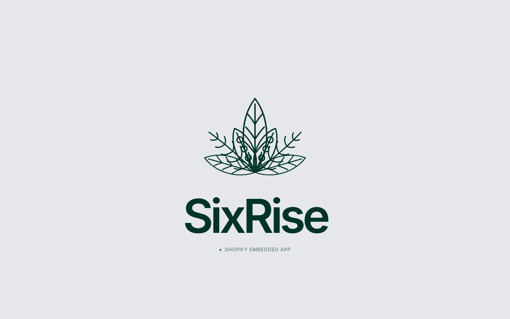
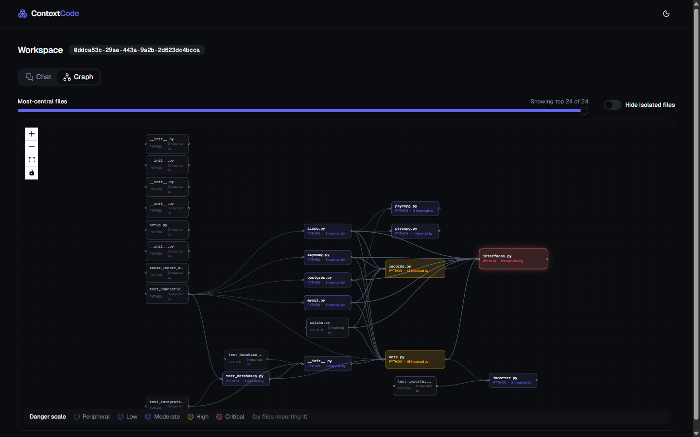

Multi-Agent Systems
LangGraph and LangChain orchestration across specialized agents for call analysis, proposal generation, and task routing — over GPT, Claude, Gemini, and LLaMA.
Computer Science @ York University · AI Engineer
I build multi-agent systems, custom MCP servers, and RAG pipelines — and put them in front of real users, not just in notebooks.
What I work with
LangGraph and LangChain orchestration across specialized agents for call analysis, proposal generation, and task routing — over GPT, Claude, Gemini, and LLaMA.
Tree-sitter AST chunking into ChromaDB for cited, hallucination-resistant Q&A over codebases of up to 10,000 files.
A 5-service backend on Railway with async SQLAlchemy and Celery, atomic Redis rate limiting, and 230+ automated tests behind it.
Selected work

A live Shopify embedded app that lifts merchant visibility inside AI shopping assistants — auditing catalog data, publishing grounded fixes, and measuring share-of-model against named competitors.

A full-stack RAG system that indexes GitHub repositories for cited, hallucination-resistant Q&A across codebases of up to 10,000 files.
Experience
May 2025 – Sep 2025
About
I’m a Computer Science student at York University, finishing in 2027. Most of what I build sits where LLMs meet real infrastructure — agent pipelines that hold up in production, retrieval systems that cite their sources, and the unglamorous backend work that keeps both honest.
Previously an AI/ML Intern at Automators Lab (May 2025 – Sep 2025), where I built multi-agent orchestration with LangGraph, shipped 10+ custom MCP servers, and engineered RAG pipelines over business data.
York University — BSc. Honours in Computer Science
Toronto, ON · Expected 2027
Machine Learning, Artificial Intelligence, Data Structures & Algorithms, Databases, Operating Systems, Computer Networks, Software Design.
Events & Academics Team, Toronto, ON